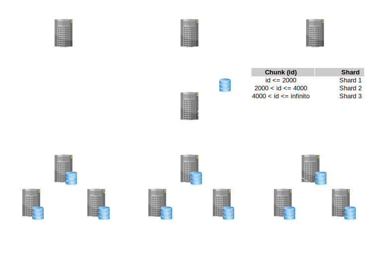

Primera Revolución
1951: Magnetic Tape
1955: Magnetic Disk
1965: ISAM (Indexed Sequential Access Method)
1965: Modelo Jerárquico (IBM IMS)
1969: Modelo de Red (IDMS Mainframes)
Segunda Revolución
1970: Codd's Paper
1974: System R
1978: Oracle
1981: Informix
1984: DB2
1987: Sysbase
1989: SQL Server
1990: OODBMS (Non Relational)
1995: MySQL
1995: PostgreSQL
Trabajaba en IBM cuando escribió y publico su trabajo sobre el modelo relacional. ¿Saben que BD tiene IBM en el mercado?
IBM decidió no implementar el modelo de Cood.
¿Saben cual es la BD con más éxito en el mercado?
Larry Ellison diseño e implementó su Base de Datos basándose en las ideas de Codd. ¿Cual es la empresa de Larry?
El Modelo Relacional
¿En qué se diferencia de los modelos jerárquico y de Red?
El Modelo Relacional describe como los datos deben ser presentados a los usuarios, en lugar de como deben ser persistidos.
El Modelo Relacional
Fortalezas, principales características
Lenguaje de Consulta SQL (estandar)
Las formas normales definen el buen diseño (no existe en el diseño de objetos).
Transacciones ACID (Agregado por Jim Gray (IBM) al trabajo de Cood).
Consistencia: Transacciones, Claves Forañas, Restricciones. Todas herramientas para garantizar la consistencia.
Tercera Revolución (2005)
NoSQL
¿Qué generó su aparición?
NoSQL
¿Qué generó su aparición?
Entre 1995 y 2005 Internet fue transformándose... partiendo desde conexiones dial-up, utilizadas mas que nada por “curiosos” hacia el sistema de comunicación mas importante de nuestra civilización.
NoSQL
¿Qué generó su aparición?
Hoy Google procesa 40.000 búsquedas por segundo en promedio, que se traduce en 3.5 billones por día.
En 1999 le llevó un mes a Google obtener (crawl) e indexar 50 millones de páginas web.
En 2012 le llevo menos de 1 minuto la misma tarea.
NoSQL
¿Qué generó su aparición?
Amazon necesitaba procesar cientos de ordenes de compra por segundo.
Facebook tiene 2.449 millones usuarios (enero 2020).
Twitter en 2013 recibía 150.000 tweets por segundo.
Aplicaciones "Planet Size"
Google, Amazon, Facebook, Twitter, etc. recibieron el nombre de aplicaciones "Planet Size". O también se las denomina "Web Scale".
Su demanda es Tan alta... pero TAN ALTA... que no funcionaban en un servidor de base de datos no alcanzaba, por mas grande que éste fuera.
Escalando Bases de Datos
Dos formas de Escalar
Escalar Vertical (scale-up)
Escalar Horizontal (scale-out)
Escalar Vertical
Scale-up
Un server mas grande cada vez que notemos degradarse la performance.
Escalar Horizontal
Scale-out: Agregamos mas servers simples al cluster.
La única forma para soportar "Planet Size" Apps (google, facebook, twitter, amazon, etc).
Escalar BDs
Partición Horizontal de los Datos: Sharding
Sharding
Con replicas read only

Distribuir una BD Relacional
Las BDs relacionales NO fueron diseñadas para distribuirse.
No tienen soporte para Sharding.
Todas sus características fuertes van en contra de distribuir los datos en más de un único server.
Consistencia por sobre cualquier otra propiedad.
NoSQL
Fueron diseñadas para distribuirse.
Sharding built in!
Replicación built in!
Alta Disponibilidad built in!
Bases de Datos Distribuidas
Teorema de CAP
Al distribuir una base de datos...te encontras con el Teorema de CAP = Consistency, Availability, Partition Tolerance
Teorema de CAP
Solo puedo ser CP o AP
Supongamos dos nodos conetados vía red...
Si quiero ser consistente, al escribir un dato en un nodo, no puedo devolver el control al usuario hasta que ese dato se replique en todos los nodos.
Supongamos que hay una corte en la red...
Si los mensajes no pueden viajar de un nodo al otro, en el escenario donde un usuario escribe en un nodo, entonces tengo dos opciones: le devuelvo al usuario el control sin terminar de replicar en el resto de los nodos, no soy consistente pero si tengo disponibilidad o hago esperar al usuario hasta que el dato nuevo pueda llegar, entonces soy consistente pero no tengo disponibilidad.
Consistencia vs Disponibilidad
Las BDs relacionales favorecen la consistencia por sobre otro atributo.
Las BDs NoSQL favorecen la disponibilidad y la escalabilidad por sobre la consistencia.
NoSQL
Hoy es una movida MUY grande... y se valen de otras características también:
Esquema Flexible: No tienen un esquema rígido como el relacional, es flexible (json en general).
Big Data: Al distribuir soportan Big Data (por esto Google puede indexar la web completa...).
Open Source: Y sobre HW más económico al aprovechar el cluster.
Search Engines: Búsquedas performantes.
NoSQL: ¿Y que significa?
NoSQL: Not Only SQL
nosql-database.org: Next Generation Databases mostly addressing some of the points: being non-relational, distributed, open-source and horizontally scalable.
Noten que quienes las inventaron son Google y Amazon, simplemente porque sino su negocio no prosperaba.
Tambien tenemos:
NewSQL
NewSQL
Extrañamos el Lenguaje SQL
Extrañamos ser Consistentes, teniendo alta disponibilidad.
Y queremos distribuir, escalar en forma horizontal